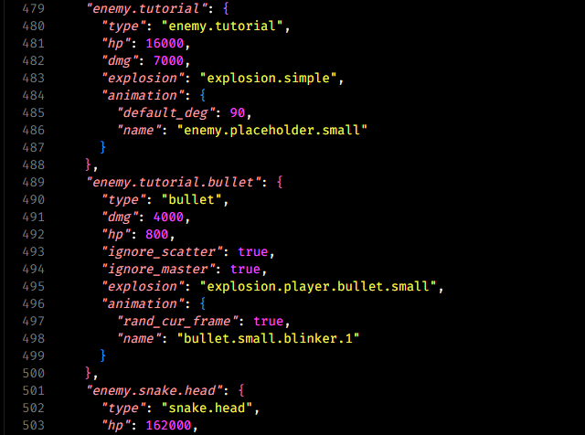

Подробности
Переделка была мега-муторной - игра в итоге крашилась из-за различий в валидации пустых тегов между YAML и JSON. После трёх дней копипаста и дебага, игра заработала и я потерял возможность писать комменты в фимозные конфиги JSON v1, но их и не читал никто так что не велика потеря. То что мне не придётся под линухом качать yaml-cpp и линковаться с ним, это канеш победа. Фан факт о Нильсе Лохманне, его достало тянуть парсер джейсонов из Qt и он решил запилить свой с блекджеком и STL-френдли интерфейсом - так появился nlohmann::json. На моей основной работе я долже наоборот, затащить Qt-парсер XML файлов заместо <msxml.h>.